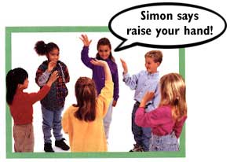
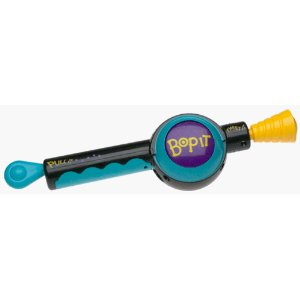

You've probably played games like Simon Says and Bop-It that involve quickly responding to a series of commands. This starter file contains a version of these games, using the finch as a controller. In this version of the game, you'll be asked to turn the finch in a certain direction, which you must quickly do; otherwise, you lose the game (I lost the game!). First, try playing the game a couple of times, then take a look at the code and see how it works.
 Now that you understand how the program is working, let's make some modifications! There are two more orientations that the finch can sense, but that haven't yet been included in the game. Figure out what they are and add them as possibilities! Here are a few more ideas to make the game better. Implement your favorites: